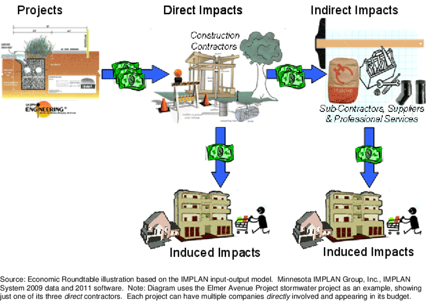

Water is a cornerstone of economic prosperity:
Water is the lifeblood of agriculture. The availability of water directly influences crop yields, affecting food production and food prices. Agricultural economies are deeply intertwined with water availability.
Various industries depend on water for their operations. Water serves as a coolant, a solvent, and a raw material in manufacturing processes. Interruptions in water availability can disrupt production and lead to economic losses.
Tourism often thrives in regions with abundant water resources, drawing revenue from recreation and leisure activities. Water bodies, from lakes to oceans, are major attractions for tourists.
Water availability profoundly influences societies and quality of life:
Access to clean water is essential for human health. Insufficient access to safe drinking water can lead to waterborne diseases and malnutrition, particularly in vulnerable populations.
The burden of water collection often falls on women and children, particularly in water-scarce regions. The time spent fetching water can hinder educational opportunities, especially for girls.
Access to water for personal hygiene, sanitation, and daily chores is a fundamental determinant of living standards. Inadequate water availability can lead to impoverished living conditions.
Water is a source of political power and conflict:
Shared river basins can lead to political tensions and conflicts between countries. Negotiations and agreements are necessary to ensure equitable access and management of transboundary water resources.
Governments play a pivotal role in managing water resources. Political decisions on infrastructure development, pollution control, and resource allocation have far-reaching consequences.
Technological innovations are key to addressing water challenges:
Desalination technologies convert seawater into freshwater, offering a solution to water scarcity in coastal areas.
Advanced wastewater treatment technologies can recycle and reuse water, reducing the demand for freshwater sources.
Geography plays a significant role in water availability:
Regions with irregular rainfall patterns or arid climates face water scarcity challenges, necessitating innovative water management solutions.
Proximity to freshwater sources, such as rivers and lakes, affects water availability. Access to groundwater reservoirs varies across regions.